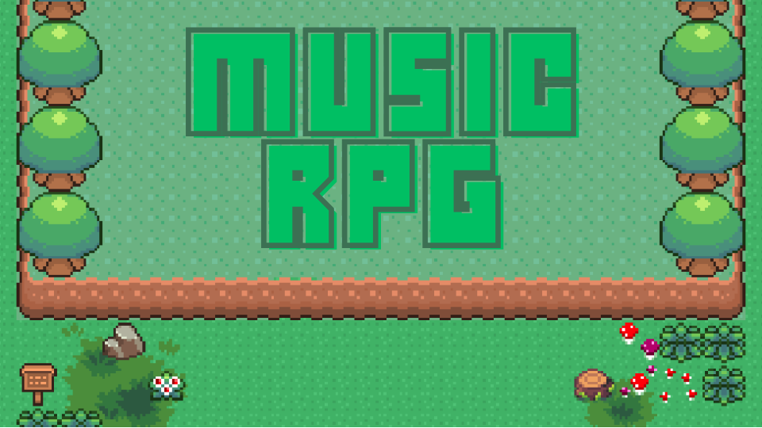

電力会社のシステムチームで業務自動化を担当 ／ AI協働 ／ FE合格
Narumi
Matsushima松島 成海
2001.08.06 生まれ ／ 24 歳
AIを右腕に、ビジネスの「不」を
最速で形にする。
DOMAIN 現在、電力会社のシステム部門に常駐し、Python による業務自動化を担当。エネルギー領域の現場で、本番運用される自動化を作り続けています。
12件
完了プロジェクト
／ 約10ヶ月
／ 約10ヶ月
238万円
コスト削減
／ PC棚卸 17台回収
／ PC棚卸 17台回収
47名
研修・教育
／ Power Platform
／ Power Platform
FE
基本情報技術者試験
／ 合格
／ 合格
01
Skill Stack
実務で運用
学習・制作レベル
Languages
Cloud / Platforms
Low-Code
Creative
Business
02
Career
12件 / 10ヶ月
完了プロジェクト
~155時間/年
自動化による工数削減（概算）
238万円
コスト削減 / PC 17台
47名
研修受講者
※「155時間/年」は、対象業務（毎日30分・週30〜40分）を営業日ベースで換算した概算値（実測値ではない）。
2025.09 — 現在
業務自動化エンジニア（SES）
電気会社のシステムチームに常駐 ／ Python による業務自動化開発を担当
約10ヶ月で 12件 のプロジェクトを完了
AI COLLABORATION
要件定義と仕様判断は自分が担い、実装の初稿生成と反復を AI（Claude Code）に委譲。
レビューと統合を自ら行う分業設計で、開発スループットを引き上げています。
主な開発（能力クラスタ別）
Aデータ照合・突合の自動化
- 申込データの統合・照合ワークフローの実装
- 帳票突合による相違検出システム
効果 → 目視照合に依存していた確認工数と、人手由来の検出漏れを削減。
BAI 判断・外部連携の自動化
- 外部 API 連携 ＋ AI による属性照合の自動判断システム
- 音声応答データの自動処理・分類システム
効果 → 判断を要する処理を自動化し、人が確認すべき例外ケースに集中できる状態を構築。
C監視・効率化・レポーティング
- 外部システムの定期監視・チャット自動通知システム
- 週30〜40分 / 毎日30分の業務をワンボタンで自動化
- 月次顧客継続率の調査・集計・PowerPoint レポート作成（毎月担当）
効果 → 反復作業を年間 約155時間相当（概算）削減し、定例レポートを定常運用化。
ENV ／ Python · Streamlit · Azure · Microsoft Teams
2024.09 — 2025.08
IT サポートエンジニア（IT派遣）
常駐先での社内 IT 支援・内製化推進・教育を担当
- Power Automate / Power Apps の 教育資料作成・研修実施（受講者 47名）
- 未使用 PC の棚卸により 17台を回収・約238万円のコスト削減
- e ラーニング管理の Excel 業務を Python で自動化
- Teams 共有チャネルでの社内マニュアル整備
- SharePoint サイトのリニューアル／業務動画の編集（Premiere Pro）
2024.04 — 2024.08
エンジニア研修（オープン研修）
株式会社givery によるオープン研修を受講
- HTML / CSS / JavaScript、Java、DB 基礎、クラウドインフラ等を体系的に習得
- チーム開発による Web アプリ・Web ゲーム制作（下記 Projects 参照）
03
Playable Projects
GitHub Pages に公開済み。ブラウザでそのままプレイできます。
※ いずれも AI 普及以前に制作。設計・実装をすべて自力で行った作品です。
04
Creative
Education ／ 学歴
-
2020.03神奈川県立 上溝南高等学校 卒業
-
2020.04 — 2024.03東京工芸大学 芸術学部 インタラクティブメディア学科音楽制作を専攻（EDM・ケルト風・和風 など）
-
2024.03卒業制作「Music RPG」で学科賞を受賞Unity で RPG を設計・実装
Background ／ 学生時代
- プログラミング教室講師（Scratch・Unity）
- 飲食店キッチン アルバイト
アートとビジネス、両方の言語を扱える点が強みです。制作の現場で培った「作り切る力」を、いまは業務の自動化へ転用しています。
Qualifications ／ 資格
- 基本情報技術者（FE）
- 普通自動車運転免許
05
Music Production
EDM
Celtic ／ ケルト風
和風
40件以上
受注制作実績
自主制作に加え、クライアントからの依頼に応じた楽曲制作を 40 件以上こなしてきました。
依頼ごとに要望をヒアリングし、イメージを仕様として落とし込み、
フィードバックをもとに調整・納品するサイクルを繰り返してきました。
この「要件定義→制作→レビュー→納品」の流れは業務システム開発と構造的に一致しており、
クライアントの意図を正確に汲み取り、期待値を超えて届ける力として業務でも活きています。
AUDIO PLAYER ／ 01
AUDIO PLAYER ／ 02
06
Video Editing
Premiere Pro を用いた社内業務動画・マニュアル動画の編集実績。
撮影素材の構成から、テロップ・カット編集・書き出しまでを一貫して担当しています。
PERSONAL ／ YouTube チャンネル
5万人
登録者数
10年以上
継続
小学5年生から音楽ゲームの実況・解説動画を制作・投稿。曲や譜面、ゲームの歴史を視聴者に伝わるよう構造化して解説し続けてきました。
長期継続と出荷規律、「分からない人へ届ける説明設計」を 10 年以上の実践で培いました。